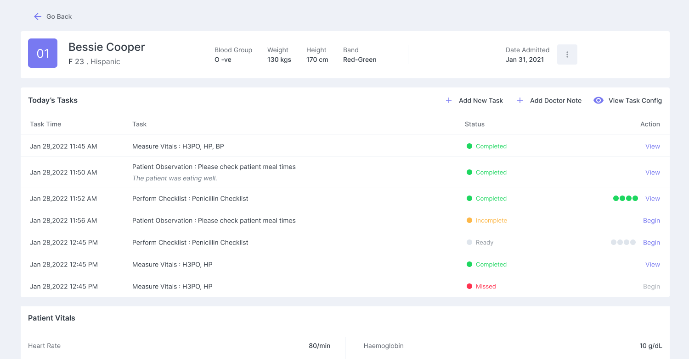
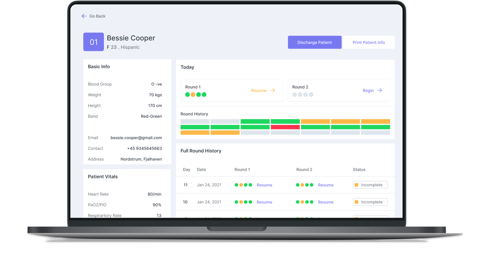
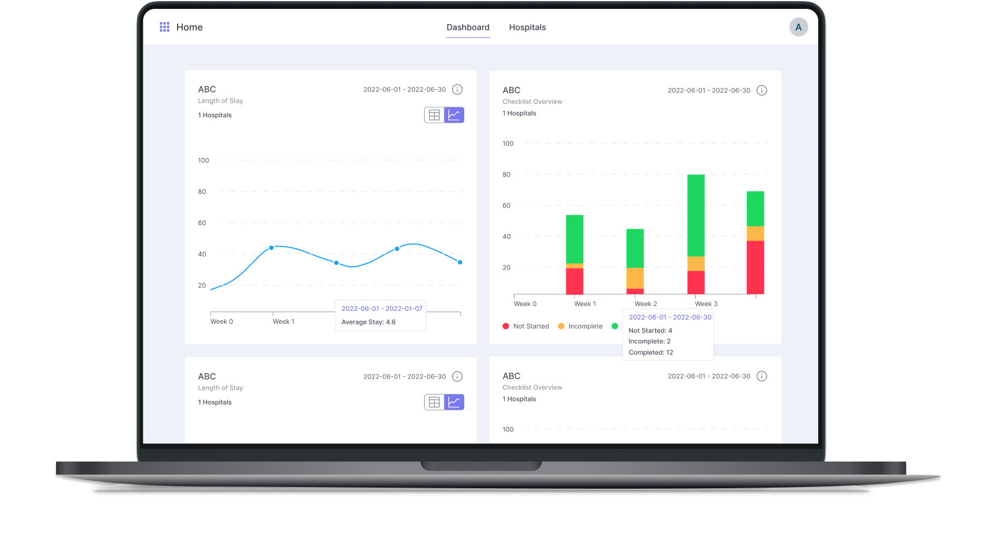

IMPROVING
PATIENT
DIAGNOSTICS
Designed the KPI module and Patient Dashboard for Intellix , a healthcare intelligence platform helping clinical teams transform complex medical data into clear, actionable insights. Used daily by doctors and nurses in live hospital settings.

CLINICAL DATA,
MADE CLEAR.
Intellix is an advanced healthcare intelligence platform designed to help clinical teams transform complex, fragmented medical data into clear, actionable insights , supporting better decisions for both patient care and hospital operations.
My work focused on two critical modules: the KPI Dashboard (enabling admin teams to monitor key performance indicators across hospitals) and the Patient Dashboard (giving nurses and doctors a clean, structured view of each patient's care plan, vitals, and task status).
NO CENTRALIZED
WAY TO TRACK
WHAT MATTERS.
The Intellix Admin Dashboard lacked a dedicated feature for monitoring and managing key performance indicators. Users had no centralized way to view or track critical metrics , patient length of stay, checklist completion rates, or operational safety data.
Impact: This gap made it difficult for healthcare administrators to quickly assess performance trends, identify issues, or make timely, data-driven decisions , directly affecting patient outcomes.
UNDERSTANDING
CLINICAL WORKFLOWS
Healthcare UX requires a deeper layer of empathy than most domains , the users are time-pressured, the stakes are high, and information overload can directly impact patient safety. I used four research methods to ground every design decision in reality.
Secondary research
Reviewed best practices and UI patterns from leading healthcare and analytics platforms. Analysed usability reports, case studies, and public design documentation focused on clinical workflow tools.
Competition analysis
Healthcare teams demand flexible platforms that reduce cognitive overload without multi-year deployments. Intellix was positioned as a focused, modern alternative to heavy legacy EHR systems.
Direct user feedback
Connected directly with hospital doctors and nurses to gather insights on how the KPI module's workflow aligned with daily routines , identifying practical improvements grounded in real clinical needs.
Analytics & monitoring
Leveraged user analytics and direct feedback mechanisms to continuously monitor how the KPI module was used in real clinical settings , tracking adoption rates and usability issues post-launch.
TARGETED GOAL
Centralized KPI tracking + revamped Patient Dashboard
The goal was to address the lack of centralized KPI tracking and the inefficiencies of the previous patient view. I designed a comprehensive KPI module as a core feature of the Intellix Admin Dashboard, alongside a revamped Patient Dashboard , both tailored to the specific workflows of healthcare teams.
The software aimed to provide a user-friendly interface that reduced cognitive load on clinical staff while surfacing the performance data that actually drives hospital decisions.
ONE CHECKLIST.
DOZENS OF
SPECIALTIES.
A significant challenge emerged when designing the daily goals checklist flow within Intellix. Hospital care involves numerous specialties , each using different medical terms, protocols, and daily objectives for patients.
This diversity made it extremely difficult to design a unified checklist system flexible enough to capture the nuances of each department while still being intuitive and efficient for all users , from ICU nurses to administrative staff.
Solution approach: Designed a configurable task template system , allowing department heads to define their own checklist structures, while nurses and doctors interact with a clean, standardised task view that hides the underlying complexity.
FOUR PROBLEMS.
FOUR SOLUTIONS.
Research revealed four primary pain points affecting both clinical staff and administrators. Each was mapped to a concrete design decision.
Information Overload & Cognitive Fatigue
Implemented clear data hierarchy and adaptive dashboards , surfacing the most critical information first, with progressive disclosure for detail.
Subpar Task and Checklist Management
Created an intuitive task configuration and checklist system , flexible enough for any specialty, clean enough for any user level.
No Effective Way to Track or Act on Vital Performance Data
Built a Key Performance Indicator module , centralizing length-of-stay, checklist completion, and operational metrics in one configurable view.
Fragmented Workflows Across Departments
Implemented dynamic, context-aware KPI alerts , notifying the right people at the right time without adding noise to already overloaded teams.
STRAIGHT TO
HIGH FIDELITY.
I moved directly to high-fidelity design because all layout structures, design components, and the core visual system had already been defined and documented by a co-designer on the team. This let me focus entirely on interaction design and information hierarchy from the start.
The KPI module required designing 14 connected screens across two flow branches , the hospital-level aggregate view and the individual KPI detail views. Each screen needed to handle multiple data states: loading, empty, populated, and error.
BEFORE &
AFTER
Every decision was grounded in a specific clinical workflow pain point. Here are the four most impactful changes made during the design process.
Flat task list with no priority signals
All tasks shown in a plain list with no visual differentiation , completed, missed, and urgent tasks looked identical, causing nurses to miss critical items.
Status-coded task list with clear visual hierarchy
Each task now has a colour-coded status badge (Completed · Incomplete · Missed · Ready) and a progress indicator , critical tasks surface immediately without scanning.
KPI data buried in spreadsheet exports
Administrators had to export raw data and build their own charts in Excel. No real-time view, no trend visibility, no alerts.
Live KPI dashboard with configurable modules
A fully configurable dashboard with real-time line and bar charts, date filtering, and hospital-level drill-down. Administrators can build the exact view their department needs.
Patient profile required multiple screens to understand
Basic info, vitals, tasks, and round history lived on separate pages , nurses had to navigate back and forth during a round, losing precious time.
Unified patient dashboard , everything on one screen
Patient vitals, today's tasks, round history, and discharge options all visible on a single, scannable page. Nurses get full context at a glance without leaving the view.
Checklist system was one-size-fits-all
A single fixed checklist template applied to all departments , useless for specialties with unique protocols and terminology.
Configurable checklist with department-specific templates
Department heads can define task types, medical terms, and objectives specific to their specialty. Clinical staff see only what's relevant to their role.
THE FINAL
ITERATION
Validated through multiple rounds of stakeholder reviews and direct feedback from hospital staff, doctors and nurses using the system in real clinical settings.


THE RESULTS
Measured through direct user feedback from hospital staff, stakeholder reviews, and post-launch analytics monitoring in real clinical environments.
WHAT I LEARNED
Designing for high-stakes users
Nurses and doctors are under pressure, time-constrained, and can't afford confusion. Every interaction needed to be obvious , not clever. This project taught me that the best healthcare UX is the UX you don't notice.
Cross-functional collaboration
Handing off the KPI module required close work with stakeholders, developers, and clinical domain experts. I learned which design decisions need early engineering alignment versus which can be iterated post-launch.
Building on an existing design system
Working within a pre-established component library required disciplined restraint. The skill wasn't creating new patterns , it was knowing when to extend the system and when to strictly follow it.
The KPI module expanded my scope
This was my first experience designing a data visualisation module , turning complex performance data into clear charts that administrators could act on. It significantly sharpened my data UX skills and opened a new direction in my career.
LIKE WHAT
YOU SEE?
Let's talk about what we can build together.